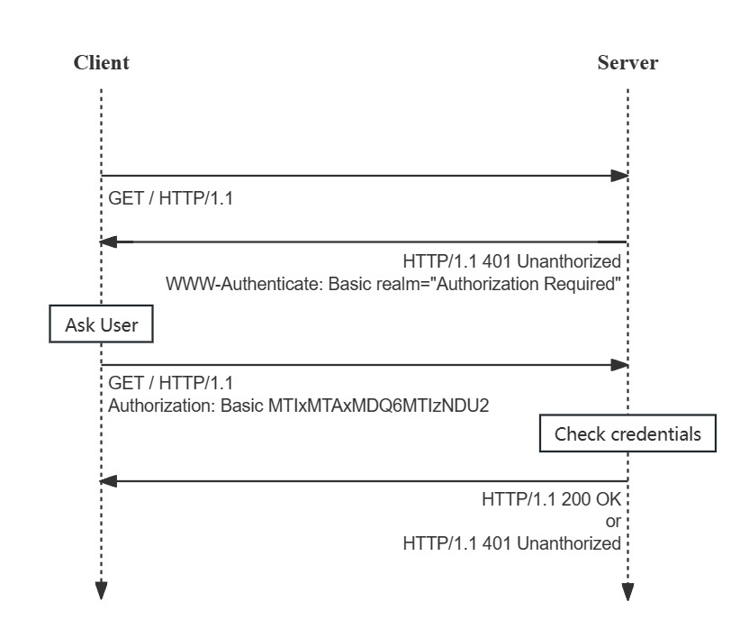
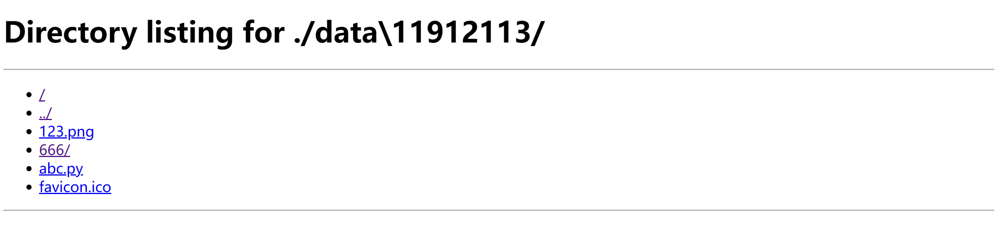

CS305 Computer Networks Project: HTTP File Manager
Semester: 2023 Fall
Last Update: 2023/11/9
Submit deadline: 2023/12/xx
Introduction
Hypertext Transfer Protocol (HTTP) is an application-layer protocol using transmission control protocol (TCP) designed for transmitting hypermedia data between web servers and browser. HTTP works as a request-response protocol between a client and server, the client first submits an HTTP request to the server, and the server should return a response to the client. HTTP/1.1 is designed as an enhancement of HTTP/1.0, with extensions of persistent connections,request methods, status codes and efficient header compression. The standard of HTTP/1.1 is defined in RFC 2616: HTTP/1.1. For the later HTTP versions, HTTP/2 supports multiplexing and server push, then HTTP/3 uses Quick UDP Internet Connections (QUIC), a transport layer protocol developed by Google that uses UDP instead of TCP. You can learn HTTP further in HTTP|MDN Web Docs.
Requirements
In this project, you are required to construct a simple file manager server in Python based on characteristics of HTTP/1.1 that has ability to serve several clients with legitimate permissions to view, download, upload, delete files, etc. You should construct your own HTTP server framework using Socket API, implement required service functions and map the HTTP requests to the corresponding functions on server correctly. Socket is an abstraction of the transport layer, it provides inter-process communication (IPC) by establishing named contact points between which the communication takes place. Basically you should implement the HTTP server based on TCP socket.
For each part of the HTTP server, the request interface of the corresponding functions have been specified. Your program should properly handle the requests from clients with valid response (status code, reason, headers and response body), return the status/error code correctly when client submits an invalid request or when exceptions occur, and cannot cause a crash when your server is running.
Since we will test your code only through the specified service interface There is no framework code provided in this project, so you need to construct your own HTTP service framework using socket API.
Test
For the tasks described in the following sections, we will briefly explain the requirements for testing the listing functions, and your code will be tested through accessing the corresponding HTTP service interface.
More explanations on specific testing scenarios and details will be provided in the test document, which will be released afterwards.
注意：
每一部分最好找到相关的官方描述提供给学生
描述task：server给用户提供什么接口，用户通过这个接口访问服务时的数据格式：url format，query parameter，response format: format of necessary header，format of necessary body content
代码来源说明
使用库的要求request, flask...
如何判断抄袭
required headers in each interface
给出提问平台？
Basic Part (80%)
In the basic part, you are required to the implement server side of the HTTP file manager, and provide interface for clients to view a directory, download files, upload files and delete files. To begin your project, you should firstly build your HTTP service framework to handle the received
You can get full marks of the basic part if your server can satisfy all requirements of the basic part and pass all test cases.
1. Basic HTTP Server (15%)
In this part, you should use socket API to construct your own HTTP server to receive and handle the HTTP requests from clients.
To handle a HTTP request, you should transfer the binary data received by Socket into a HTTP request object so that server can figure out the content of each part of HTTP request. Then for valid requests, your server should return the binary data of HTTP response to clients, which correspond to the encapsulation and decapsulation of HTTP request and response.
The format and explanation of URL can be found in the lab slides lab3_http.pdf, or refer to What is a URL? (mozilla.org).
An typical HTTP request and response have the following structure, and you should strictly follow this format when implementing your HTTP server.

Request Method
The request methods indicate different services that server provides to clients. The descriptions of request methods can be found in RFC 2616: HTTP/1.1#Section-5.1.1
For simplification, your HTTP server only needs to support the following request methods:
- GET: The client requests specified resource, and server should response with the binary data of resource in response body.
- HEAD: Same as GET above except that the server will not include the binary data in body.
- POST: Submit data to server, with some potential side-effect
(Headers)
Descriptions of required headers?
Response Status Code and Reason Phrase
The response status code is a 3-digit integer to show the status and of the request. And the corresponding reason phrase is intended to give a short textual description of the status code, which is more comprehensible for human users. This two values are included in the status line of the HTTP response message. You can refer to RFC 2616: HTTP/1.1#Section-6.1.1 for introduction of the status code and reason phrase in the status line of response.
You can refer to RFC 2616: HTTP/1.1#Section-10 for complete types of status codes and reason phrases with definitions. The following are some status codes that you may need to support in this project:
2xx: Success
- 200 OK
- 206 Partial Content
3xx: Redirection
- 301 Redirect
4xx: Client Error
- 400 Bad Request
- 401 Unauthorized
- 403 Forbidden
- 404 Not Found
- 405 Method Not Allowed
- 416 Range Not Satisfiable
5xx: Server Error (要用吗？)
- 502 Bad Gateway
- 503 Service Temporarily Unavailable
The requirements of status code for different scenarios will be detailed in the following sections.
1.1 Persistent Connection (10%)
In HTTP/1.0, only short connection is the default connection model. While in HTTP/1.1, new connection models including persistent connection and pipelining are introduced.

In HTTP/1.1, any connection are keep-alive, in other words, persistent. The connection will be maintained unless client or server actively close the connection, or receive a HTTP message with header Connection: Close and close the connection. The header Connection, introduced by Connection - HTTP | MDN, has the following values:
Connection: Closeimplies that server or client wants to close the connection, which is the default value of request in HTTP/1.0Connection: Keep-Aliveimplies that the client wants to keep the connection on. While persistent connection is the default connection in request of HTTP/1.1
Each time when server receives a request from client, the server will build a TCP connection and try to reuse the connection to handle multiple requests sequentially from the same clients. The server should not close the connection until the received HTTP request has the header Connection: Close or the connection has been inactive for a certain period of time.
Task: The server should handle the requests with persistent connection in default, with the ability to handle multiple requests sequentially in a single connection. And if the client sends request with Connection: Close, the server should close the current connection after finishing handling the request of received request.
1.2 Authorization (5%)
In this part, you don't necessarily provide services for registering or changing password, you are only required to implement HTTP Basic Authorization Scheme for user. And the authorization information of users includes username and password, which can be simply stored by server.

Task: When the first time a client access the server without authorization, the server will response with 401 Unauthorized with WWW-Authenticated: Basic realm="Authorization Required" in header, asking user to provide authorization information.
- To provide authorization information, client should include the key-value pair
Authorization: Basic [EncodedInfo]header of HTTP request message, where EncodedInfo is encoded from string{username}:{password}using Base64 encoding. - If user provides invalid authorization information, server should response with 401 Unauthorized.
- If user correctly provides the authorization information, server should response with status code 2xx.
- The services of the following part all require authorization.
2. View and Download (20%?)
In this part, you are required to implement a basic directory viewer and provide file download service for client.
On the server side, all the files will be stored in the directory /data under the root directory of your project. Each time a client send a request with URL corresponding to a valid path in the server, the server will reply with a html page showing the files and directories of the current path or the content of the corresponding file according to path in the server.
Task: Providing a file-accessing service for client, so that a client can view the list of directory or download certain file by sending GET request to http://localhost:8080/[access_path], where the access_path is the relative path under the \data folder in the root directory of your project. The corresponding headers including Content-Type and Content-Length should be correctly derived by the file. You can refer to Media Types (iana.org) for more details of Media Types.
The following are examples that client sends a correct request to server, when server is running on localhost:8080. In these cases, server should provide users with specified services correctly and return 200 OK.
You can refer to the html template by running python -m http.server on your computer and request to http://localhost:[port] on your browser.
- When a client wants to view the files under the directory
/data/11912113/, it can directly send a HTTP request using GET method with URLhttp://localhost:8080/11912113/on your browser, then server will response with ahtmlfile showing file tree of the current directory as follows:where/and../refers to the root directory and above directory of the current.123.png,abc.py,favicon.icoare files and666/refers to a folder in the current directory. - Then if you click the URL of a file on the
htmlpage (e.g.123.png) or enter the corresponding URLhttp://localhost:8080/11912113/123.pngon your browser and send HTTP request with GET method to the server, the server will response with the binary content of the file123.png, and your browser will display the file directly (if the file type is supported for opening with the browser) or make a notification that you have downloaded the file.
Notice that your server should also handle the invalid requests from clients. Following are some invalid cases:
- If the format of the request URL or the query parameters are invalid, server should return 400 Bad Request.
- If the request URL does not exist in your server, server should return 404 Not Found (html page?).
- If the client access the file-getting interface with other methods instead of GET method, the server should return 405 Method Not Allowed.
这部分的测试
- 提供一个html模板来接收server返回的file list，此时前端由我们提供，后端只需要返回用户请求路径的文件列表方便测试
- 不需要html，服务器只需要返回用户请求路径对应的文件列表，方便测试
- 上面二选一吧，否则不好测试，或者测试不测前端
3. Upload and Delete Files (20%)
In this part, you are required to implement the uploading and deleting service with authorization and handle the requests from clients to upload or delete certain files. A typical file manager will provide service to multiple users at the same time, and keep their files safety from operations of other users. Thus each user only has permission to modify their own directory, and other operation are forbidden in the server.
3.1 Upload File (10%)
Each user will have their own user directory named by their username on the path /data/[username]/. After signing in with user information to server, user can upload files to their own directory with authorization information. Besides, a user only has the operation permission under their own directory, uploading and deleting operations without authorization or permission should be forbidden by server. For invalid cases, server should return correct status code to users.
Task: Implement a HTTP file uploading interface for client, so that a client can upload files by sending POST request to http://localhost:8080/upload?path=/11912113/. The query parameter path=/11912113 determines the uploading directory /data/11912113 under the root directory of the project, and the request body includes the binary file content. Then server should response to client with 200 OK
You should properly handle invalid requests like the following cases (for cases of user "11912113"):
- If there is no authorization information inside the HTTP request, or the authorization is invalid for server to accept, server should return 401 Unauthorized.
- If the authorization information is not the user "11912113", this request is also invalid since there is no permission for other user to upload file to
/data/11912113/, and server should return 403 Forbidden. - If the target directory to upload file to does not exist in the server, the server should return 404 Not Found.
- If the client access the upload interface with other methods instead of POST method, the server should return 405 Method Not Allowed.
Delete File (10%)
Same as file-uploading, each user can only delete files under their user directory /data/[username]/, other deleting request without authorization or permission should be forbidden by the server.
Task: Implement a HTTP file deleting interface for client, so that a client can send a file deleting request using POST method with URL http://localhost:8080/delete?path=/11912113/abc.py. The query parameter path=/11912113/abc.py determines the file /data/11912113/abc.py under the root directory of the project will be deleted. In this case, server should return 200 OK.
You should properly handle invalid requests like the following cases (also for the cases of user "11912113"):
- If there is no authorization information inside the HTTP request, or the authorization is invalid for server to accept, server should return 401 Unauthorized.
- If the authorization information is not the user "11912113", this request is also invalid since there is no permission for other user to delete files in
/data/11912113/, and server should return 403 Forbidden. - If the target directory to upload file to does not exist in the server, the server should return 404 Not Found.
- If the client access the upload interface with other methods instead of POST method, the server should return 405 Method Not Allowed.
Cases of deleting with authorization are just like the cases of uploading with authorization above.
(How to test.)
4. Cookies and Session (10%?)
An HTTP cookie (web cookie, browser cookie) is a small piece of data that a server sends to a user's web browser. The browser may store the cookie and send it back to the same server with later requests. Typically, an HTTP cookie is used to tell if two requests come from the same user—keeping a user logged in, for example. It remembers stateful information for the stateless HTTP protocol.
In this part, you are require to provide a cookie session-id in response when user logs in for the first time. Then for the later request to the same website, the client (web browser) will include cookies in the request so that the server can figure out the authorization information by the received cookie and enable users to maintain login status.
Task: When a client successfully logs in with username and password for the first time, the server will generate a unique session-id bound to the username, which will be stored by server and sent to client in the header Set-Cookie of response. The next time user can just request with received session-id in cookie, so that server can differentiate the user and authorize with session-id. Also this session-id will become expired if the user doesn't login again in a certain period of time. The user will be allowed to access the same website if the request has the cookie session-id under the expiration date, and the following operations will be same as description of aforementioned cases.

Notice that when client requests with expired or invalid cookie, it cannot pass the validation, and server should return 401 Unauthorized.
5. Chunked Transfer (5%) (保留吗？)
In this part, you are required to implement chunked transfer of HTTP.
Reference: RFC 9112: HTTP/1.1 Chunked-transfer
Chunked transfer encoding is a streaming data transfer mechanism of HTTP/1.1. Instead of using header Content-Length, sender can the data in chunks, which is useful when the total size of the response may not be known until the request has been fully processed, such as transmitting dynamic content.
Task: You should provide another file-accessing interface that when user send GET request to http://localhost:8080/chunked?path=[request_path], use chunked encoding to transfer files, then the header in HTTP response Transfer-Encoding: chunked explains that this transmission is a chunk of the complete large file. Each chunk contains a chunk length at the start of the chunk with a CRLF and the corresponding chunk data with the other CRLF. Then a number zero with two following CRLF implie the end of the chunked transfer. Also, server should return 200 OK. The structure of chunked transfer is shown below:
(briefly explain the structure and implementation of chunked transfer)
Body format:
(Begin)/---[Chunk Length][CRLF]|----[Chunked Data][CRLF]|----[Chunk Length][CRLF]|----[Chunked Data][CRLF]|----......|----[Chunk Length][CRLF]|----[Chunked Data][CRLF]|----0[CRLF]\---[CRLF](End)
Bonus Part
Breakpoint Transmission (5%)
HTTP/1.1 (RFC2616) starts to support obtain partial content of the file, which provides technical support for Parallel download and breakpoint continuation. It is implemented through two parameters, the Range header in HTTP request and Content-Range in HTTP response.
Task: Support file random access with given Range header to obtain partial content of the file. This function should be implemented under the same interface as the basic part "2. View and Download".
When the client sends GET request to server with Range header, the server should firstly validate the received range. If received bytes range is valid, then response with the bytes content of the corresponding range, and include the header Content-Range in response correctly with 206 Partial Content.
Request: Client (browser) tells the server which part of the content it wants to obtain. (e.g. Range: bytes=0-1000.)
- Examples of byte-ranges-specifier values from RFC 2616: HTTP/1.1#Section14.35.1 (assuming an entity-body of length 10000):
- The first 500 bytes (byte offsets 0-499, inclusive):
bytes=0-499- The second 500 bytes (byte offsets 500-999, inclusive):bytes=500-999- The final 500 bytes (byte offsets 9500-9999, inclusive):bytes=-500orbytes=9500-- The first and last bytes only (bytes 0 and 9999):bytes=0-0,-1- Several legal but not canonical specifications of the second 500 bytes (byte offsets 500-999, inclusive):bytes=500-600,601-999orbytes=500-700,601-999
Response: Server return the partial content, and describe the range of the response coverage and the entire entity length. (e.g. Content-Range: bytes 0-499/1234.) Server should return 206 Partial Content when handling the GET request with header Range: bytes ***.
Examples of byte-content-range-spec values from RFC 2616: HTTP/1.1#Section14.16, assuming that the entity contains a total of 1234 bytes:
The first 500 bytes:
bytes 0-499/1234The second 500 bytes:
bytes 500-999/1234- All except for the first 500 bytes:
bytes 500-1233/1234 - The last 500 bytes:
bytes 734-1233/1234
- All except for the first 500 bytes:
Encryption (5%)
The above implementations are still plaintext transmission for all information, thus there exists risk of information leakage and tampering. To implement secure transmission, SSL/TLS is used to provide secure transmission. With asymmetric encryption, a client can first obtain public key from server, then sends data encrypted through the public key to server. Then server will use the private key to decrypt the data and continue to analyze the HTTP packet.
Task: In this part, you don't need to completely implement the HTTPS. Instead, you need to implement a simple communication framework, with a symmetric encryption algorithm for efficient communication and an asymmetric encryption to initially negotiate the key of symmetric encryption. You can refer to the following steps:
- The client first request the public key of asymmetric encryption from the server
- Client generates a key for symmetric encryption
- Client uses public key obtained from server to encrypt the public key and send to server
- Server receives the encrypted key and use the server's own private key to decrypted the key
- After the above negotiation process, server and client will use use symmetric encryption to encrypt the following communication with the negotiated key
Therefore, what is different from aforementioned part is that, you need to implement both the server side and client side. Then, provide a simple scenario to show the security of the communication between server and clients.
You can also use other encrypted communication framework to improve the
SpeedTest for Large File Transmission (Max 5%)
Chunked-transfer or breakpoint transmission
In this part, a speed test for large file transfer will be applied to test the performance of your HTTP server, including one-to-one transmission and one-to-many transmission. The size of file to be transferred is about
xxx to xxx. There are some testing scenarios?
How to mark?
Concurrency (Max 5%)
High concurrency is an important part of server. Typical servers should be able to handle a large amount of requests simultaneously. In this part, there are some testing cases with different levels of concurrency.
How to mark?
(需不需要删掉concurrency？把这个转为一个基本要求：支持多个client同时访问即可（threading）)
Other (Max 10%)
Besides the above parts, you can also utilize the knowledge you learned to improve the service or performance of your HTTP server, including but not limited to implement you own "HTTP" based on other transport protocols rather than TCP, or modify the implementation of HTTP on the application layer.